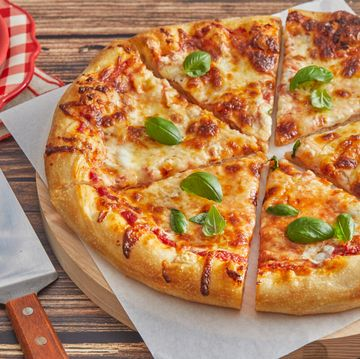

Classic Cheese Pizza

Description:
Big familiar cheese pizza
Ingredients:
- 1 1/4-oz. packet active dry yeast (2 1/4 teaspoons)
- 2 tsp. granulated sugar
- 1 1/2 c. warm water (90 to 100°)
- 4 c. all-purpose flour
- 2 tbsp. olive oil, divided, plus more for brushing
- 2 1/4 tsp. kosher salt
- 1/4 c. grated parmesan cheese, divided
- 1 c. Homemade Pizza Sauce, divided
- 3 c. shredded low-moisture mozzarella cheese, divided
- 1 c. cubed fresh mozzarella cheese, divided
- Fresh basil, to serve